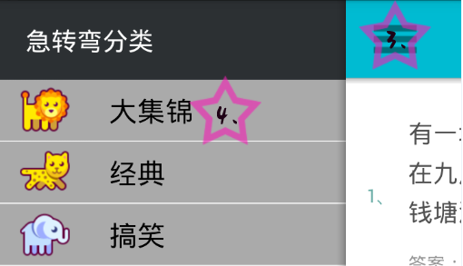

一、导航栏的使用
图①

图②
Ⅰ、点击图①中的按钮1，会弹出急转弯分类列表图②，点击图②中的按钮3，会恢复到原来的页面状态。
Ⅱ、点击图②中的列表4，菜单会自动关闭，并且急转弯列表会切换到所点击的分类。
Ⅲ、点击图①中的搜索按钮2，会切换到搜索页面，可以搜索自己感兴趣的急转弯。
二、分页组件使用
图③
Ⅰ、点击图③中的按钮5，切换列表中的数据到上一页。
Ⅱ、点击图③中的按钮7，切换列表中的数据到下一页。
Ⅲ、点击图③中的进度条6，能够快速切换数据的页数，方便快速翻页。